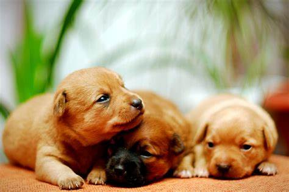
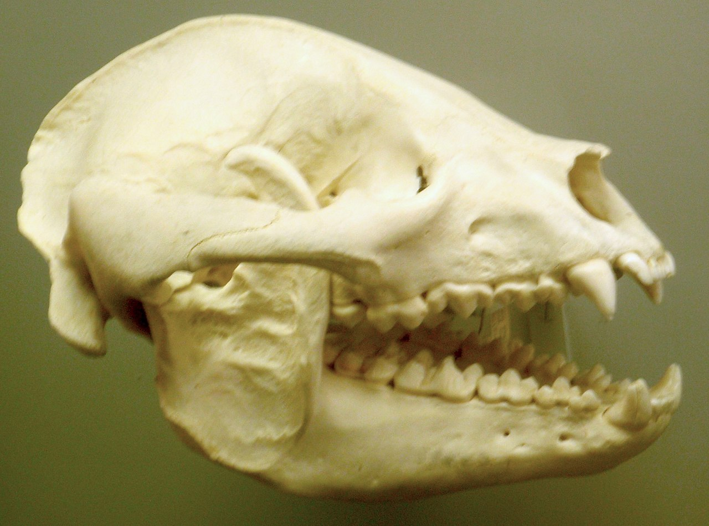
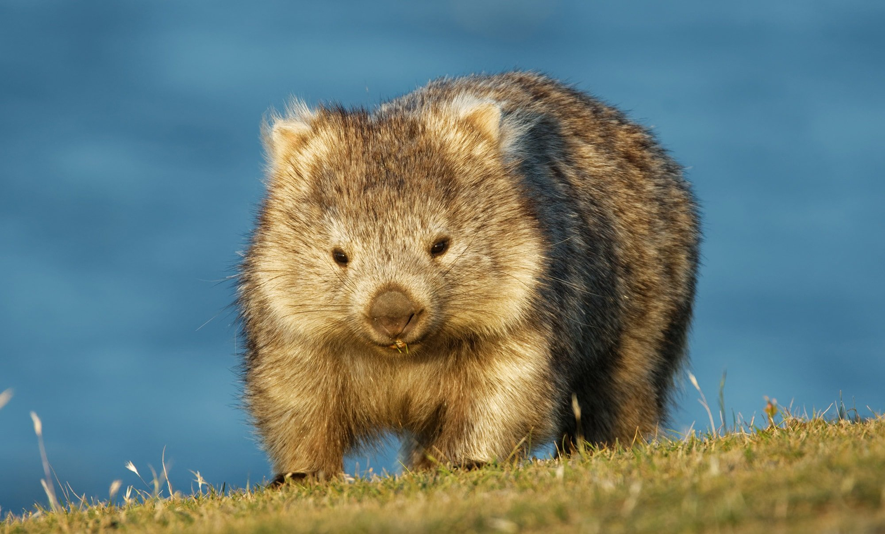
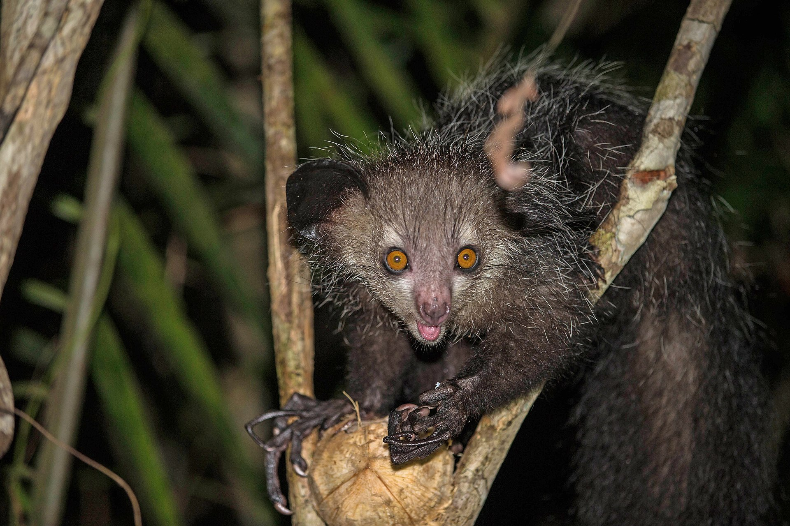

Zebra are African equines with distinctive black-and-white striped coats. There are three living species: Grévy's zebra (Equus grevyi), the plains zebra (E. quagga), and the mountain zebra (E. zebra). Zebras share the genus Equus with horses and asses, the three groups being the only living members of the family Equidae. Zebra stripes come in different patterns, unique to each individual. Several theories have been proposed for the function of these patterns, with most evidence supporting them as a deterrent for biting flies. Zebras inhabit eastern and southern Africa and can be found in a variety of habitats such as savannahs, grasslands, woodlands, shrublands, and mountainous areas. Zebras are primarily grazers and can subsist on lower-quality vegetation. They are preyed on mainly by lions, and typically flee when threatened but also bite and kick. Zebra species differ in social behaviour, with plains and mountain zebra living in stable harems consisting of an adult male or stallion, several adult females or mares, and their young or foals; while Grévy's zebra live alone or in loosely associated herds. In harem-holding species, adult females mate only with their harem stallion, while male Grévy's zebras establish territories which attract females and the species is promiscuous. Zebras communicate with various vocalisations, body postures and facial expressions. Social grooming strengthens social bonds in plains and mountain zebras.Zebras' dazzling stripes make them among the most recognisable mammals. They have been featured in art and stories in Africa and beyond. Historically, they have been highly sought by exotic animal collectors, but unlike horses and donkeys, zebras have never been completely domesticated. The International Union for Conservation of Nature (IUCN) lists Grévy's zebra as endangered, the mountain zebra as vulnerable and the plains zebra as near-threatened. The quagga (E. quagga quagga), a type of plains zebra, was driven to extinction in the 19th century. Nevertheless, zebras can be found in numerous protected areas.
 Zebra Technologies
Zebra Technologies
Lion The lion (Panthera leo) is a large cat of the genus Panthera, native to Africa and India. It has a muscular, broad-chested body; a short, rounded head; round ears; and a dark, hairy tuft at the tip of its tail. It is sexually dimorphic; adult male lions are larger than females and have a prominent mane. It is a social species, forming groups called prides. A lion's pride consists of a few adult males, related females, and cubs. Groups of female lions usually hunt together, preying mostly on medium-sized and large ungulates. The lion is an apex and keystone predator; although some lions scavenge when opportunities occur and have been known to hunt humans, lions typically do not actively seek out and prey on humans. Lion The lion (Panthera leo) is a large cat of the genus Panthera, native to Africa and India. It has a muscular, broad-chested body; a short, rounded head; round ears; and a dark, hairy tuft at the tip of its tail. It is sexually dimorphic; adult male lions are larger than females and have a prominent mane. It is a social species, forming groups called prides. A lion's pride consists of a few adult males, related females, and cubs. Groups of female lions usually hunt together, preying mostly on medium-sized and large ungulates. The lion is an apex and keystone predator; although some lions scavenge when opportunities occur and have been known to hunt humans, lions typically do not actively seek out and prey on humans. The lion inhabits grasslands, savannahs, and shrublands. It is usually more diurnal than other wild cats, but when persecuted, it adapts to being active at night and at twilight. During the Neolithic period, the lion ranged throughout Africa and Eurasia, from Southeast Europe to India, but it has been reduced to fragmented populations in sub-Saharan Africa and one population in western India. It has been listed as Vulnerable on the IUCN Red List since 1996 because populations in African countries have declined by about 43% since the early 1990s. Lion populations are untenable outside designated protected areas. Although the cause of the decline is not fully understood, habitat loss and conflicts with humans are the greatest causes for concern. One of the most widely recognised animal symbols in human culture, the lion has been extensively depicted in sculptures and paintings, on national flags, and in literature and films. Lions have been kept in menageries since the time of the Roman Empire and have been a key species sought for exhibition in zoological gardens across the world since the late 18th century. Cultural depictions of lions were prominent in Ancient Egypt, and depictions have occurred in virtually all ancient and medieval cultures in the lion's historic and current range.
The dog (Canis familiaris or Canis lupus familiaris) is a domesticated descendant of the wolf. Also called the domestic dog, it was domesticated from an extinct population of wolves during the Late Pleistocene, over 14,000 years ago by hunter-gatherers, prior to the development of agriculture. The dog was the first species to be domesticated by humans. Experts estimate that due to their long association with humans, dogs have expanded to a large number of domestic individuals and gained the ability to thrive on a starch-rich diet that would be inadequate for other canids.[4] The dog has been selectively bred over millennia for various behaviors, sensory capabilities, and physical attributes.[5] Dog breeds vary widely in shape, size, and color. They have identical skeletal structures (with the exception of the tail and skull), powerful jaws that house around 42 teeth, and well-developed senses of smell, hearing and sight. They perform many roles for humans, such as hunting, herding, pulling loads, protection, assisting police and the military, companionship, therapy, and aiding disabled people. Communication in dogs include eye gaze, facial expression, vocalization, body posture (including movements of bodies and limbs), and gustatory communication (scents, pheromones, and taste). They mark their territories by urinating on them, which is more likely when entering a new environment. Over the millennia, dogs became uniquely adapted to human behavior, and the humancanine bond has been a topic of frequent study. This influence on human society has given them the sobriquet of "man's best friend". The dog is the most popular pet in the United States, present in 34-40% of households. In developed countries, around 20% of dogs are kept as pets, while 75% of the population in developing countries largely consists of feral and community dogs. As of 2020, the global dog population was estimated at 700 million to 1 billion.
Dogs are domesticated members of the family Canidae. They are classified as a subspecies of Canis lupus, along with wolves and dingoes.[7][8] Dogs were domesticated from wolves over 14,000 years ago by hunter-gatherers, before the development of agriculture.[9][10] The dingo and the related New Guinea singing dog resulted from the geographic isolation and feralization of dogs in Oceania over 8,000 years ago.[11][12] Dogs, wolves, and dingoes have sometimes been classified as separate species.[8] In 1758, the Swedish botanist and zoologist Carl Linnaeus assigned the genus name Canis (which is the Latin word for "dog")[13] to the domestic dog, the wolf, and the golden jackal in his book, Systema Naturae. He classified the domestic dog as Canis familiaris and, on the next page, classified the grey wolf as Canis lupus.[2] Linnaeus considered the dog to be a separate species from the wolf because of its upturning tail (cauda recurvata in Latin term), which is not found in any other canid.[14] In the 2005 edition of Mammal Species of the World, mammalogist W. Christopher Wozencraft listed the wolf as a wild subspecies of Canis lupus and proposed two additional subspecies: familiaris, as named by Linnaeus in 1758, and dingo, named by Meyer in 1793. Wozencraft included hallstromi (the New Guinea singing dog) as another name (junior synonym) for the dingo. This classification was informed by a 1999 mitochondrial DNA study.[3] The classification of dingoes is disputed and a political issue in Australia. Classifying dingoes as wild dogs simplifies reducing or controlling dingo populations that threaten livestock. Treating dingoes as a separate species allows conservation programs to protect the dingo population.[15] Dingo classification affects wildlife management policies, legislation, and societal attitudes.[16] In 2019, a workshop hosted by the IUCN/Species Survival Commission's Canid Specialist Group considered the dingo and the New Guinea singing dog to be feral Canis familiaris. Therefore, it did not assess them for the IUCN Red List of threatened species.[17]
>Cattle (Bos taurus) are large, domesticated, bovid ungulates widely kept as livestock. They are prominent modern members of the subfamily Bovinae and the most widespread species of the genus Bos. Mature female cattle are called cows and mature male cattle are bulls. Young female cattle are called heifers, young male cattle are oxen or bullocks, and castrated male cattle are known as steers. Cattle are commonly raised for meat, for dairy products, and for leather. As draft animals, they pull carts and farm implements. In India, cattle are sacred animals within Hinduism, and may not be killed. Small breeds such as the miniature Zebu are kept as pets. Taurine cattle are widely distributed across Europe and temperate areas of Asia, the Americas, and Australia. Zebus are found mainly in India and tropical areas of Asia, America, and Australia. Sanga cattle are found primarily in sub-Saharan Africa. These types, sometimes classified as separate species or subspecies, are further divided into over 1,000 recognized breeds. Around 10,500 years ago, taurine cattle were domesticated from wild aurochs progenitors in central Anatolia, the Levant and Western Iran. A separate domestication event occurred in the Indian subcontinent, which gave rise to zebu. There were over 940 million cattle in the world by 2022. Cattle are responsible for around 7% of global greenhouse gas emissions. They were one of the first domesticated animals to have a fully-mapped genome.
The term Cattle was borrowed from Anglo-Norman catel, itself from medieval Latin capitale 'principal sum of money, capital', itself derived in turn from Latin caput 'head'. Cattle originally meant movable personal property, especially livestock of any kind, as opposed to real property (the land, which also included wild or small free-roaming animals such as chickens—they were sold as part of the land).[1] The word is a variant of chattel (a unit of personal property) and closely related to capital in the economic sense.[2][1] The word cow came via Anglo-Saxon cū (plural cȳ), from Common Indo-European gʷōus (genitive gʷowés) 'a bovine animal', cf. Persian: gâv, Sanskrit: go-.[3] In older English sources such as the King James Version of the Bible, cattle often means livestock, as opposed to deer, which are wild.[1]
Cattle are large artiodactyls, mammals with cloven hooves, meaning that they walk on two toes, the third and fourth digits. Like all bovid species, they can have horns, which are unbranched and are not shed annually.[4] Coloration varies with breed; common colors are black, white, and red/brown, and some breeds are spotted or have mixed colors.[5] Bulls are larger than cows of the same breed by up to a few hundred kilograms. British Hereford cows, for example, weigh 600–800 kg (1,300–1,800 lb), while the bulls weigh 1,000–1,200 kg (2,200–2,600 lb).[6] Before 1790, beef cattle averaged only 160 kg (350 lb) net. Thereafter, weights climbed steadily.[7][8] Cattle breeds vary widely in size; the tallest and heaviest is the Chianina, where a mature bull may be up to 1.8 m (5 ft 11 in) at the shoulder, and may reach 1,280 kg (2,820 lb) in weight.[9] The natural life of domestic cattle is some 25–30 years. Beef cattle go to slaughter at around 18 months, and dairy cows at about five years.[10]
The polar bear (Ursus maritimus) is a large bear native to the Arctic and nearby areas. It is closely related to the brown bear, and the two species can interbreed. The polar bear is the largest extant species of bear and land carnivore, with adult males weighing 300–800 kg (660–1,760 lb). The species is sexually dimorphic, as adult females are much smaller. The polar bear is white- or yellowish-furred with black skin and a thick layer of fat. It is more slender than the brown bear, with a narrower skull, longer neck and lower shoulder hump. Its teeth are sharper and more adapted to cutting meat. The paws are large and allow the bear to walk on ice and paddle in the water. Polar bears are both terrestrial and pagophilic (ice-living) and are considered to be marine mammals due to their dependence on marine ecosystems. They prefer the annual sea ice but live on land when the ice melts in the summer. They are mostly carnivorous and specialized for preying on seals, particularly ringed seals. Such prey is typically taken by ambush; the bear may stalk its prey on the ice or in the water, but also will stay at a breathing hole or ice edge to wait for prey to swim by. The bear primarily feeds on the seal's energy-rich blubber. Other prey include walruses, beluga whales and some terrestrial animals. Polar bears are usually solitary but can be found in groups when on land. During the breeding season, male bears guard females and defend them from rivals. Mothers give birth to cubs in maternity dens during the winter. Young stay with their mother for up to two and a half years. The polar bear is considered to be a vulnerable species by the International Union for Conservation of Nature (IUCN) with an estimated total population of 22,000 to 31,000 individuals. Its biggest threats are climate change, pollution and energy development. Climate change has caused a decline in sea ice, giving the polar bear less access to its favoured prey and increasing the risk of malnutrition and starvation. Less sea ice also means that the bears must spend more time on land, increasing conflicts with people. Polar bears have been hunted, both by native and non-native peoples, for their coats, meat and other items. They have been kept in captivity in zoos and circuses and are prevalent in art, folklore, religion and modern culture.
Polar bear WorldThe giant panda (Ailuropoda melanoleuca), also known as the panda bear or simply panda, is a bear species endemic to China. It is characterised by its white coat with black patches around the eyes, ears, legs and shoulders. Its body is rotund; adult individuals weigh 100 to 115 kg (220 to 254 lb) and are typically 1.2 to 1.9 m (3 ft 11 in to 6 ft 3 in) long. It is sexually dimorphic, with males being typically 10 to 20% larger than females. A thumb is visible on its forepaw, which helps in holding bamboo in place for feeding. It has large molar teeth and expanded temporal fossa to meet its dietary requirements. It can digest starch and is mostly herbivorous with a diet consisting almost entirely of bamboo and bamboo shoots. The giant panda lives exclusively in six montane regions in a few Chinese provinces at elevations of up to 3,000 m (9,800 ft). It is solitary and gathers only in mating seasons. It relies on olfactory communication to communicate and uses scent marks as chemical cues and on landmarks like rocks or trees. Females rear cubs for an average of 18 to 24 months. The oldest known giant panda was 38 years old. As a result of farming, deforestation and infrastructural development, the giant panda has been driven out of the lowland areas where it once lived. The wild population has increased again to 1,864 individuals as of March 2015. Since 2016, it has been listed as Vulnerable on the IUCN Red List. In July 2021, Chinese authorities also classified the giant panda as vulnerable. It is a conservation-reliant species. By 2007, the captive population comprised 239 giant pandas in China and another 27 outside the country. It has often served as China's national symbol, appeared on Chinese Gold Panda coins since 1982 and as one of the five Fuwa mascots of the 2008 Summer Olympics held in Beijing.
The giant panda is endemic to China. It is found in small, fragmented populations in six mountainous regions in the country, mainly in Sichuan, and also in neighbouring Shaanxi and Gansu.[23] Successful habitat preservation has seen a rise in panda numbers, though loss of habitat due to human activities remains its biggest threat. In areas with a high concentration of medium-to-large-sized mammals—such as domestic cattle, a species known to degrade the landscape—the giant panda population is generally low. This is mainly attributed to the panda's avoidance of interspecific competition.[24][25] The species has been located at elevations of 2,400 to 3,000 m (7,900 to 9,800 ft) above sea level.[26] They frequent habitats with a healthy concentration of bamboos, typically old-growth forests, but may also venture into secondary forest habitats.[27] The Daxiangling Mountain population inhabits both coniferous and broadleaf forests.[28] Additionally, the Qinling population often selects evergreen broadleaf and conifer forests, while pandas in the Qionglai mountainous region exclusively select upland conifer forests. The remaining two populations, namely those occurring in the Liangshan and Xiaoxiangling mountains, predominantly occur in broadleaf evergreen and conifer forests.[12]: 137–148 Giant pandas once roamed across Southeast Asia from Myanmar to northern Vietnam. Their range in China spanned much of the southeast region. By the Pleistocene, climate change affected panda populations, and the subsequent domination of modern humans led to large-scale habitat loss.[29][30] In 2001, it was estimated that the range of the giant panda had declined by about 99% of its range in earlier millenniums.[31]
Wombats are short-legged, muscular quadrupedal marsupials of the family Vombatidae that are native to Australia. Living species are about 1 m (40 in) in length with small, stubby tails and weigh between 20 and 35 kg (44 and 77 lb). They are adaptable and habitat tolerant, and are found in forested, mountainous, and heathland areas of southern and eastern Australia, including Tasmania, as well as an isolated patch of about 300 ha (740 acres) in Epping Forest National Park[2] in central Queensland.
The name "wombat" comes from the now nearly extinct Dharug language spoken by the aboriginal Dharug people, who originally inhabited the Sydney area.[3] It was first recorded in January 1798, when John Price and James Wilson, a white man who had adopted aboriginal ways, visited the area of what is now Bargo, New South Wales. Price wrote: "We saw several sorts of dung of different animals, one of which Wilson called a 'Whom-batt', which is an animal about 20 inches [51 cm] high, with short legs and a thick body with a large head, round ears, and very small eyes; is very fat, and has much the appearance of a badger."[4] Wombats were often called badgers by early settlers because of their size and habits. Because of this, localities such as Badger Creek, Victoria, and Badger Corner, Tasmania, were named after the wombat.[5] The spelling went through many variants over the years, including "wambat", "whombat", "womat", "wombach", and "womback", possibly reflecting dialectal differences in the Darug language.[3]
The name "wombat" comes from the now nearly extinct Dharug language spoken by the aboriginal Dharug people, who originally inhabited the Sydney area.[3] It was first recorded in January 1798, when John Price and James Wilson, a white man who had adopted aboriginal ways, visited the area of what is now Bargo, New South Wales. Price wrote: "We saw several sorts of dung of different animals, one of which Wilson called a 'Whom-batt', which is an animal about 20 inches [51 cm] high, with short legs and a thick body with a large head, round ears, and very small eyes; is very fat, and has much the appearance of a badger."[4] Wombats were often called badgers by early settlers because of their size and habits. Because of this, localities such as Badger Creek, Victoria, and Badger Corner, Tasmania, were named after the wombat.[5] The spelling went through many variants over the years, including "wambat", "whombat", "womat", "wombach", and "womback", possibly reflecting dialectal differences in the Darug language.[3]
Though genetic studies of the Vombatidae have been undertaken, evolution of the family is not well understood. Wombats are estimated to have diverged from other Australian marsupials relatively early, as long as 40 million years ago, while some estimates place divergence at around 25 million years.[6]: 10– Some prehistoric wombat genera greatly exceeded modern wombats in size. The largest known wombat, Phascolonus, which went extinct approximately 40,000 years ago,[7] is estimated to have had a body mass of up to 360 kilograms (790 lb).[8]
The aye-aye (Daubentonia madagascariensis) is a long-fingered lemur, a strepsirrhine primate native to Madagascar with rodent-like teeth that perpetually grow[3] and a special thin middle finger that they can use to catch grubs and larvae out of tree trunks. It is the world's largest nocturnal primate.[4] It is characterized by its unusual method of finding food: it taps on trees to find grubs, then gnaws holes in the wood using its forward-slanting incisors to create a small hole into which it inserts its narrow middle finger to pull the grubs out. This foraging method is called percussive foraging, and takes up 5–41% of foraging time.[5][6] The only other living mammal species known to find food in this way are the striped possum and trioks (genus Dactylopsila) of northern Australia and New Guinea, which are marsupials.[7] From an ecological point of view, the aye-aye fills the niche of a woodpecker, as it is capable of penetrating wood to extract the invertebrates within.[8][9] The aye-aye is the only extant member of the genus Daubentonia and family Daubentoniidae. It is currently classified as Endangered by the IUCN. A second species, Daubentonia robusta, appears to have become extinct at some point within the last 1000 years, and is known from subfossil finds.[10]
The genus Daubentonia was named after the French naturalist Louis-Jean-Marie Daubenton by his student, Étienne Geoffroy Saint-Hilaire, in 1795. Initially, Geoffroy considered using the Greek name Scolecophagus ("worm-eater") in reference to its eating habits, but he decided against it because he was uncertain about the aye-aye's habits and whether other related species might eventually be discovered.[11] In 1863, British zoologist John Edward Gray coined the family name Daubentoniidae.[12] The French naturalist Pierre Sonnerat was the first to use the vernacular name "aye-aye" in 1782 when he described and illustrated the lemur, though it was also called the "long-fingered lemur" by English zoologist George Shaw in 1800—a name that did not stick. According to Sonnerat, the name "aye-aye" was a "cri d'exclamation & d'étonnement" (cry of exclamation and astonishment). However, American paleoanthropologist Ian Tattersall noted in 1982 that the name resembles the Malagasy name "hai hai" or "hay hay", (also ahay, aiay, haihay[13]) which refers to the animal and is used around the island. According to Dunkel et al. (2012), the widespread use of the Malagasy name indicates that the name could not have come from Sonnerat. Another hypothesis proposed by Simons and Meyers (2001) is that it derives from "heh heh", which is Malagasy for "I don't know". If correct, then the name might have originated from Malagasy people saying "heh heh" to avoid saying the name of a feared, magical animal.[11]
